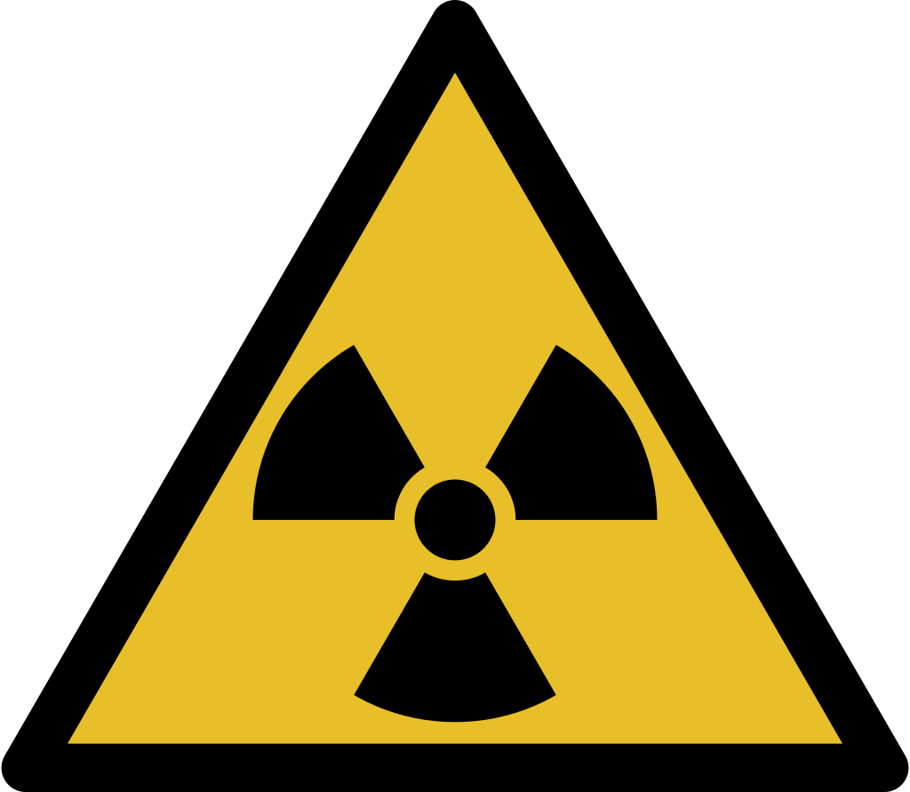
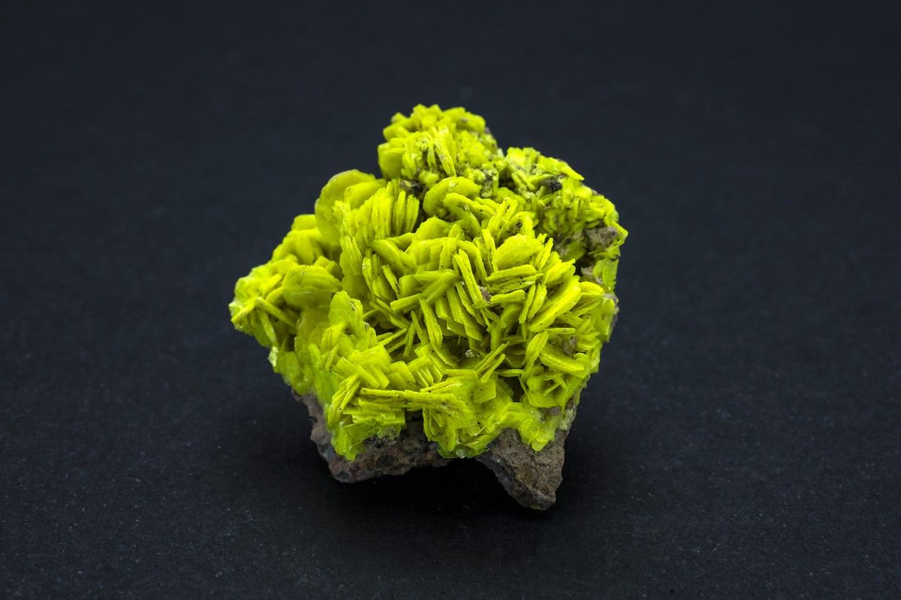

l'autunite est RADIOACTIVE
ce qu'elle fait d'elle un danger pour nous. Une couleur verte fluo ,elle a la capcité a brillé dans la lumière UV.


Fun Facts:
Entre 1800 et 1900 des verres ont été fait par de la ouraline une matière radioactive.
Information:
L'autunite est pas dangeureux a l'eposition mais une trop LONGE exposition peu étre un danger. La pierre peut atteindre 86,4 kBq/g , se qui augmente le risque du CANCER.
Découvert:
La pierre a été retrouvée souvent en France, en Allemagne et aux États-Unis. La première découverte été dans la ville française d'Autun d'oû viens le nom Autunite.